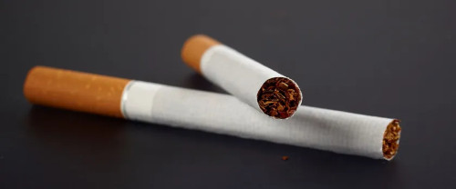
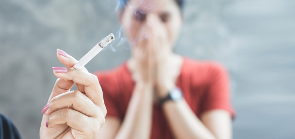
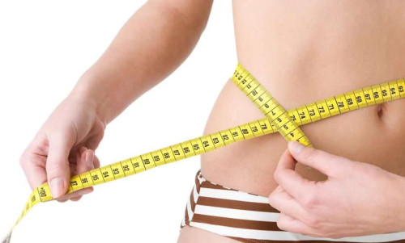
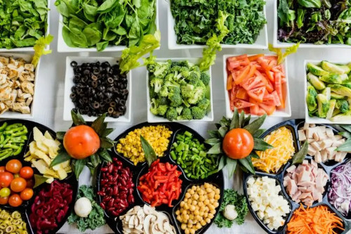
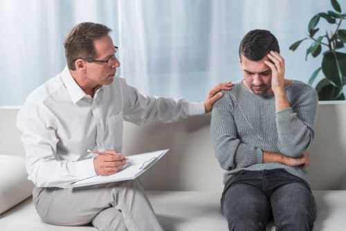
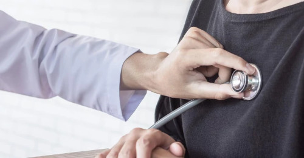

10 Zasad zdrowego stylu życia
Styl życia: dieta, ruch, sposoby radzenia sobie ze stresem, środowisko i jakość relacji, jakie nawiązujemy z innymi, w ponad 50 proc. odpowiada za stan naszego organizmu. Nie na wszystko mamy wpływ: nie zmienimy na przykład genów, które w 20 proc. wpływają na zdrowie. Zmiana nawyków jest jednak w zasięgu ręki. Dzięki temu zyskasz wyższą jakość życia w każdym jego aspekcie.
1.Nie pal
Z każdym wypalonym papierosem, wraz z dymem tytoniowym wchłaniasz cztery tysiące substancji szkodliwych, z których ponad 40 to substancje rakotwórcze, m.in.: aceton, cyjanowodór, kadm, arsen, amoniak, tlenek węgla, metanol, DDT, toluen, butan! Już po 20 minutach od zgaszenia ostatniego papierosa puls i ciśnienie krwi wraca do normy! A to tylko początek przemiany. Po 25 godzinach abstynencji płuca zaczynają się oczyszczać. Po trzech dniach nikotyna zostaje usunięta z organizmu, intensywniej zaczniesz czuć smaki i zapachy. Po pięciu latach bez papierosa ryzyko zachorowania na raka płuc, jamy ustnej, krtani czy przełyku zmniejsza się o połowę, obniża się także ryzyko udaru mózgu.
2.Chroń siebie i innych przed biernym paleniem
Bierne wdychanie dymu tytoniowego jest równie niebezpieczne jak samo palenie. Tzw. strumień boczny dymu tytoniowego, czyli po prostu smużka snująca się z zapalonego papierosa, jest bardziej szkodliwy niż dym, którym zaciąga się palacz! Niższa temperatura spalania niż w czasie zaciągania się papierosem powoduje, że w bocznym strumieniu dymu tytoniowego jest 35 razy więcej dwutlenku węgla i cztery razy więcej nikotyny niż w dymie wdychanym przez osobę palącą. Bierne palenie niesie identyczne skutki zdrowotne, co aktywne palenie papierosów. Jest wiele przypadków zapadania na choroby odtytoniowe wśród osób, które same nigdy nie paliły. Przebywanie w pomieszczeniu, w którym unosi się dym tytoniowy, podnosi się ryzyko wystąpienia takich chorób jak udar, zawał czy przewlekła obturacyjna choroba płuc. Pomieszczenia, w których przebywamy my i nasi najbliżsi, mają być wolne od dymu tytoniowego.
Schudnij
Jak sprawdzić, czy masz nadwagę? Oblicz wskaźnik masy ciała BMI. Wagę (w kilogramach) podziel przez wzrost (w metrach) podniesiony do kwadratu. Każdy wynik powyżej 25 oznacza nadwagę, od 30 - to otyłość. Jeśli nie czujesz się na siłach konsekwentnie zmienić dietę w celu schudnięcia, skorzystaj z poradni chorób metabolicznych (działają w ramach NFZ), gdzie dietetyk pomoże ustalić jadłospis. Każdy z nas potrzebuje innej ilości kalorii dziennie.
Ruszaj się
Nie trzeba biegać maratonów czy spędzać na siłowni kilka godzin codziennie. Wystarczy umiarkowany ruch każdego dnia. To na przykład 30 minut szybkiego spaceru, jazda na rowerze lub pływanie. Nie rzadziej niż cztery razy w tygodniu. Dobry pomysł to wysiadanie o przystanek lub dwa wcześniej od celu i pokonanie pozostałej trasy piechotą. Warto ograniczać czas spędzony na siedząco. Jeśli pracujemy w biurze, wstać co dwie godziny i pochodzić.
5.Jedz zdrowo
Co to znaczy zdrowo? Jest kilka prostych zasad.
- Nie można być głodnym - warto jeść regularnie, co trzy-cztery godziny, BEZ PODJADANIA w przerwach.
- Unikaj produktów wysoko przetworzonych.
- Unikaj słodyczy i cukru. Zastępuj je owocami i orzechami.
- Pij co najmniej 1,5 litra wody dziennie. Wodę dostarczamy do organizmu nie tylko w postaci wypijania kolejnych szklanek tego napoju. Zapotrzebowanie na wodę zależy od wieku, masy ciała, stanu fizjologicznego itd.
- Ogranicz spożycie mięsa, zwłaszcza czerwonego. Międzynarodowa Agencja Badania Raka (IARC) jest agendą Światowej Organizacji Zdrowia (WHO), uznała, że czerwone mięso jest "prawdopodobnie rakotwórcze". Według IARC istnieją ograniczone dowody na to, że każde 100 g czerwonego mięsa spożywanego codziennie zwiększa ryzyko raka jelita grubego o 17 proc. Rakotwórcze związki mają powstawać także podczas smażenia lub pieczenia na grillu.Jedz ryby. Chude ryby tj. okoń, mintaj, dorsz, szczupak zawierają do 1 proc. tłuszczu; średnio tłuste np. płotka, karmazyn, karp, ostrobok do 5 proc., natomiast tłuste, czyli łosoś, makrela, sardynka, szprotki, śledź, węgorz - ponad 5 proc. Rekordzistą jest węgorz - jest w nim prawie 25 proc. tłuszczu! W rybach oprócz kwasów nasyconych znajdują się też (w znacznych ilościach) kwasy nienasycone, w tym kwasy omega-3. To właśnie one sprzyjają wzmocnieniu odporności i łagodzą procesy zapalne. W dłuższej perspektywie mogą zapobiegać rozwojowi chorób cywilizacyjnych, czyli nadciśnienia, miażdżycy, chorób układu krążenia. Badania dowodzą, że jedzenie ryb może być dobrym sposobem profilaktyki antynowotworowej i antyzawałowej. Tłuste ryby są doskonałym źródłem witamin A i D, a także witaminy E, które wpływają na wygląd skóry, zapobiegają m.in. powstawaniu w nadmiarze, wolnych rodników tlenu, odpowiadających m.in. za obniżenie sprawności układu immunologicznego, uszkodzenie tkanek w tym tkanki nerwowej oraz procesy starzenia.
6. Ogranicz alkohol
Pomimo kardioprotekcyjnego działania wina, które wynika z badań obserwacyjnych i eksperymentalnych, alkohol nie został uznany jako ,,środek'' profilaktyczny". Nie ma randamizowanych badań klinicznych, które by potwierdziły przewagę korzyści nad stratami picia alkoholu. Za to jest wiele dowodów na szkodliwość przewlekłego, bądź nadmiernego spożycia alkoholu. Taki sposób picia alkoholu może powodować zaburzenia w funkcjonowaniu układu krążenia, czego skutkiem mogą być nadciśnienie tętnicze, zaburzenia rytmu oraz krwotoczny udar mózgu.
7. Chroń się przed słońcem i szerokim łukiem omijaj solaria
W Polsce co roku odnotowuje się około 50 tys. przypadków nowych zachorowań na nowotwory skóry, około 2500-3000 z nich to czerniaki. Ta liczba ta podwaja się co 10 lat. Czerniak skóry może rozwinąć się u każdego. Polacy z powodu jasnej karnacji są w dużym stopniu narażeni na czerniaka. Stały i znaczący wzrost (300 proc. w ciągu ostatnich 20 lat) liczby zachorowań potwierdza, iż nasz naród znajduje się w grupie wysokiego ryzyka. Czerniak wywodzi się z melanocytów – komórek wytwarzających barwnik zwany melaniną, który sprawia, że skóra ciemnieje w kontakcie z promieniowaniem ultrafioletowym. Czerniaki najczęściej pojawiają się na skórze, ale mogą wystąpić także w obrębie ust, nosa czy gałki ocznej. Gdy zmiany wykryje się wcześnie i usunie się je zanim choroba będzie w zaawansowanym stadium, możliwe jest wyleczenie aż 80 proc. chorych. Dlatego tak ważne jest jego szybkie i prawidłowe rozpoznanie. Zagrożenie zachorowaniem na czerniaka wzrasta u osób:
- o jasnej karnacji, rudych lub blond włosach, niebieskich oczach, licznych piegach
- dużej liczbie znamion barwnikowych, znamion w miejscach drażnienia
- które doznały oparzeń słonecznych, szczególnie w dzieciństwie
- słabo tolerujących słońce, opalających się z dużym trudem lub w ogóle
- przebywających w pełnym słońcu powyżej godziny dziennie
- u których w rodzinie występowały przypadki czerniaka lub innych nowotworów skóry
- korzystających z solarium
8. Dbaj o psychikę
Psychika ma duży wpływ na ciało. Nie jesteśmy w stanie uniknąć stresu, ale warto nauczyć się z
nim żyć i
rozładowywać napięcie, które powoduje w naszym organizmie.
Najbardziej rujnujący dla zdrowia jest stres chroniczny, czyli doświadczany często. Taki przewlekły
stres wcale nie musi wiązać się z jakimiś dramatycznymi wydarzeniami, może do niego dochodzić z powodu
ciągłego zamartwiania się o pieniądze, zdrowie czy pracę.
Gdy pojawia się czynnik stresujący, w ciągu kilku sekund następuje bardzo silne wydzielenie przez
nadnercza dwóch hormonów: adrenaliny i noradrenaliny. Gdy żyjemy w ciągłym stresie, w naszym organizmie
dochodzi do przewlekłego podwyższenia tych hormonów. A wysoki, długotrwale podniesiony poziom kortyzolu
jest jedną z przyczyn powodujących zaburzenia kontroli działania osi podwzgórze-przysadka-nadnercza -
układu będącego kluczowym dla regulacji takich funkcji fizjologicznych, jak sen, łaknienie, reakcje
emocjonalne, odporność organizmu na infekcje. Jednocześnie podniesiony poziom kortyzolu upośledza także
struktury odpowiedzialne za kształtowanie się pamięci i reakcji emocjonalnych.
Jak radzić sobie ze stresem?
- Warto ustalić priorytety. Określić, co jest dla najważniejsze, by na te sprawy nie zabrakło nam czasu
- Nie wymagajmy od siebie zbyt wiele
- Warto nauczyć się przekazywać obowiązki innym w pracy i w domu, bo nie ma osób niezastąpionych
- Ważna jest regularna aktywność fizyczna, bo zmniejsza skutki codziennego stresu.
- Trzeba rezerwować sobie czas na relaks i odpoczynek by regenerować swoje siły
- Warto dzielić się swoimi zmartwieniami np.: z rodziną i przyjaciółmi
- Ciesz się życiem, planuj czas z rodziną oraz przyjaciółmi, bo to największy skarb
- By poradzić sobie ze chronicznym stresem, warto poznać, co nas stresuje i jak sobie z tym radzić, pomóc nam w tym może psycholog lub psychoterapeuta.
- W walce ze stresem skuteczne są także różne metody relaksacji np.: joga, medytacja czy masaż
9. Zadbaj o sen
O bezsenności mówimy gdy przynajmniej 3 dni w tygodniu, przez miesiąc, nasz sen jest zbyt krótki lub taki, że nie daje nam wypoczynku. Jeśli problemy z zasypianiem są sporadyczne, mówimy o bezsenności krótkotrwałej, epizodycznej. Niewysypianie się powoduje zaburzenia koncentracji, czasami rozdrażnienie, obniżenie nastroju. Jeżeli takie objawy utrzymują się dłużej, mogą spowodować rozwój poważniejszych chorób.
10. Regularnie badaj się
Podstawowe badania profilaktyczne – takie jak badanie krwi, morfologia i moczu – dobrze robić raz w roku. Warto też sprawdzić poziom glukozy, a dla osób po 40-tce – cholesterolu. Zbyt wysoki poziom cholesterolu złego tzw. LDL stanowi ryzyko rozwoju miażdżycy i warto zmienić dietę, by obniżyć jego poziom, czasami potrzebne są leki. Warto też regularnie mierzyć ciśnienie krwi. Co trzecia osoba dorosła w Polsce ma nadciśnienie tętnicze, tj. ciśnienie równe lub większe od 140/90 mm Hg. Przez długi czas może ono bez dolegliwości uszkadzać układ krążenia. Jeżeli masz nadciśnienie, postaraj się schudnąć, ogranicz spożycie soli i alkoholu. Koniecznie bądź pod opieką lekarza. Jeśli masz przepisane leki, bierz je regularnie.